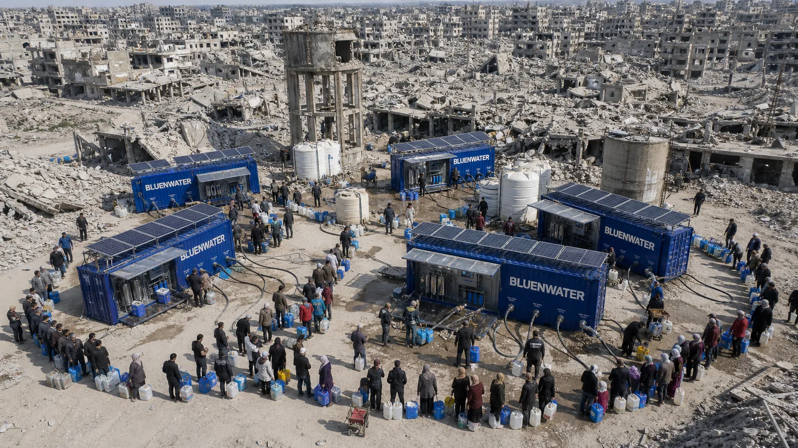

水処理を超えて、生存インフラをつくります。
BLUE N WATERは、RaDX触媒素材とAQUACOMプラットフォームを基盤に、食品加工水、プール、産業排水、移動式浄水システムまで展開する薬品低減・低エネルギー型の水資源インフラ企業です。

We do not sell systems.
We build usable water infrastructure.
BLUE N WATERは、装置販売にとどまらず、触媒、ろ過材、運用管理、データ、資源回収へ拡張する水資源インフラプラットフォームを目指します。
Core Technology Stack
RaDX触媒素材、Bluechip Media、AQUACOMプラットフォームを中心に、薬品低減・低エネルギー・低メンテナンスの水処理プロセスを設計します。
Business Platforms
食品加工水ブランドK-GIM、移動式浄水BLUE BOX、産業排水・資源回収、プール・建物水処理まで、一つの技術ツリーで展開します。
水が必要なあらゆる場所で、使える水をつくります。
こんにちは。BLUE N WATER代表取締役の鄭潤在（Jung Yoonjae）です。
BLUE N WATERは、単に水を浄化する会社を目指しているわけではありません。産業、生活、災害現場、遠隔地、そして将来の過酷環境において、水の制約によって人と事業が止まらないための水資源インフラ企業を目指しています。
長年蓄積された触媒基盤の水処理技術をもとに、食品加工水の再利用、産業排水の前処理、プール水質管理、移動式浄水システムBLUE BOXなど、現場に必要な解決策をつくっています。
これからもBLUE N WATERは、技術を現場に適用し、検証可能な数値で性能を証明しながら、持続可能な水自立技術を世界市場へ広げていきます。
鄭潤在（Jung Yoonjae）
代表取締役, BLUE N WATER
この場所に実際の写真やレンダリング画像を差し替えてください。
政府R&D、特許、現場プロジェクトで検証される水処理プラットフォーム
BLUE N WATERは、登録特許8件、出願・予定特許4件、政府R&D・支援事業5件以上の実績を基盤にBLUE BOXとAQUACOMを高度化しています。